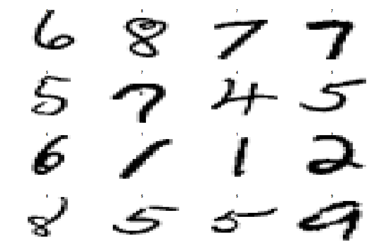
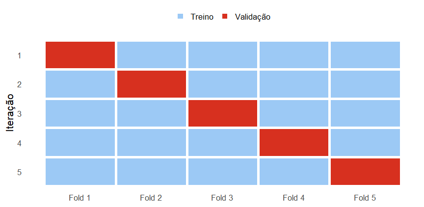
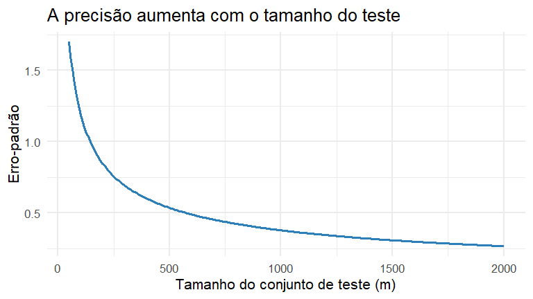

Parte I : Regressão
Material complementar: Fundamentos do Aprendizado Estatístico
Como usar este material
Material complementar
Este conjunto de slides aprofunda tópicos apresentados em Fundamentos do Aprendizado Estatístico.
Conteúdo principal
- função de regressão;
- perda e risco;
- generalização;
- validação cruzada;
- viés e variância;
- tuning.
Aqui aprofundamos
- contexto histórico e exemplos;
- risco condicional e esperado;
- LOOCV;
- incerteza no erro de teste;
- AIC e BIC;
- consistência.
Este material é de consulta e aprofundamento. Nem todas as derivações fazem parte do núcleo avaliativo da disciplina.
1. Perspectiva histórica e exemplos adicionais
De onde vem a ideia de Machine Learning?
Em uma formulação histórica, Arthur Samuel descreveu aprendizado de máquina como a possibilidade de computadores aprenderem padrões de comportamento sem que todas as regras fossem programadas explicitamente.
Décadas depois, Mitchell organizou a ideia em três componentes:
\[ \boxed{T=\text{tarefa}}\qquad \boxed{E=\text{experiência}}\qquad \boxed{P=\text{medida de desempenho}} \]
Um programa aprende com a experiência \(E\) em relação a uma tarefa \(T\) quando seu desempenho, medido por \(P\), melhora com a experiência.
A leitura estatística
Na aprendizagem supervisionada, a experiência é uma amostra
\[ \mathcal D_n=\{(X_1,Y_1),\ldots,(X_n,Y_n)\} \]
O algoritmo utiliza \(\mathcal D_n\) para produzir
\[ \widehat g_{\mathcal D_n}(x), \]
que deverá funcionar também para observações não utilizadas no ajuste.
\[ \boxed{\text{aprender}}\quad\Longrightarrow\quad \boxed{\text{generalizar além da amostra observada}} \]
Exemplo: reconhecimento de dígitos
Considere imagens de dígitos manuscritos.
- \(X\): intensidades dos pixels da imagem;
- \(Y\in\{0,1,\ldots,9\}\): dígito representado;
- tarefa: classificar uma nova imagem;
- experiência: imagens previamente rotuladas;
- desempenho: proporção de classificações corretas em novas imagens.
Esse é um problema de classificação, não de regressão, mas ilustra claramente a estrutura \((X,Y)\) da aprendizagem supervisionada.
Exemplo: dígitos manuscritos (MNIST)
Exemplo: redshift de galáxias
Uma imagem ou espectro pode conter milhares de medidas, enquanto a resposta de interesse pode ser uma única quantidade contínua.
\[ X=\text{informação observada da galáxia}, \qquad Y=\textit{redshift} \]
O objetivo preditivo é construir
\[ \widehat g(X)\approx E(Y\mid X) \]
Esse exemplo evidencia que \(X\) não precisa ser uma única variável: pode ser um vetor de dimensão muito alta.

Exemplo: Isomap Face
Cada observação é uma imagem de uma face e a resposta indica a direção para a qual a pessoa está olhando.
\[ X=\text{pixels da imagem}, \qquad Y=\text{direção do olhar} \]
A função de regressão pode ser usada para prever a direção do olhar em uma nova imagem.
O objeto \(X\) pode ser complexo — imagem, sinal, texto ou vetor de atributos — sem alterar a lógica fundamental da regressão.

Exemplo: YearPredictionMSD
No Million Song Dataset, características de áudio são usadas para prever o ano de lançamento de uma música.
\[ X=(\text{timbre, energia, características acústicas,}\ldots), \]
\[ Y=\text{ano de lançamento} \]
O mesmo problema permite dois objetivos:
- predição: estimar o ano de uma nova música;
- interpretação: investigar como características musicais se relacionam com o período de lançamento.

Uma estrutura comum
Apesar de muito diferentes, os exemplos compartilham a mesma estrutura:
| Problema | \(X\) | \(Y\) | Objetivo |
|---|---|---|---|
| PIB × vida | indicadores econômicos | expectativa de vida | regressão |
| Redshift | imagem/espectro | redshift | regressão |
| Face | pixels | direção | regressão |
| Música | atributos acústicos | ano | regressão |
| MNIST | pixels | dígito | classificação |
\[ \boxed{\text{Dados}}\rightarrow\boxed{\text{algoritmo}}\rightarrow\boxed{\widehat g}\rightarrow\boxed{\text{generalização}} \]
2. Aprofundamento sobre risco
O modelo aprendido é aleatório
O procedimento de aprendizagem é uma função da amostra:
\[ \mathcal A:\mathcal D_n\longmapsto \widehat g_{\mathcal D_n} \]
Se repetirmos a coleta de dados,
\[ \mathcal D_n^{(1)},\mathcal D_n^{(2)},\ldots, \]
obteremos, em geral,
\[ \widehat g_1,\widehat g_2,\ldots \]
Duas fontes de aleatoriedade aparecem: a nova observação e a amostra usada para construir o modelo.
Risco condicional à amostra
Depois de observar \(\mathcal D_n\), o modelo \(\widehat g_{\mathcal D_n}\) está fixado.
Sob perda quadrática, seu risco é
\[ \boxed{ R(\widehat g\mid\mathcal D_n) = E\left[(Y-\widehat g_{\mathcal D_n}(X))^2\mid\mathcal D_n\right] } \]
A esperança é tomada sobre uma nova observação \((X,Y)\).
Pergunta: quão bem este modelo específico generaliza?
Risco esperado do procedimento
Antes de observarmos a amostra, \(\widehat g_{\mathcal D_n}\) também é aleatório.
Podemos então considerar
\[ \boxed{ E_{\mathcal D_n}\left[R(\widehat g\mid\mathcal D_n)\right] } \]
Agora avaliamos o procedimento de aprendizagem, e não apenas um ajuste particular.
Pergunta: se repetíssemos o experimento muitas vezes, qual seria o desempenho médio do algoritmo?
Dois níveis de avaliação
Modelo ajustado
\[ R(\widehat g\mid\mathcal D_n) \]
Avalia o modelo obtido com esta amostra.
Procedimento
\[ E_{\mathcal D_n}[R(\widehat g\mid\mathcal D_n)] \]
Avalia o algoritmo sob repetição amostral.
Essa distinção ajuda a entender por que variância do estimador e estabilidade do algoritmo são importantes.
Decomposição do risco quadrático
Defina
\[ r(x)=E(Y\mid X=x) \]
Então
\[ Y-g(X)=\{Y-r(X)\}+\{r(X)-g(X)\} \]
Elevando ao quadrado e tomando esperança, o termo cruzado desaparece porque
\[ E[Y-r(X)\mid X]=0 \]
Resultado da decomposição
Assim,
\[ \boxed{ R(g) = E[(r(X)-g(X))^2] + E[\operatorname{Var}(Y\mid X)] } \]
Redutível
\[ E[(r(X)-g(X))^2] \]
Depende da qualidade do preditor.
Irredutível
\[ E[\operatorname{Var}(Y\mid X)] \]
Permanece mesmo para \(g=r\).
Por que a média condicional aparece?
Para um \(x\) fixo, considere
\[ E[(Y-a)^2\mid X=x] \]
Escrevendo \(\mu_x=E(Y\mid X=x)\),
\[ E[(Y-a)^2\mid X=x] = \operatorname{Var}(Y\mid X=x)+(\mu_x-a)^2 \]
O primeiro termo não depende de \(a\). Logo,
\[ \boxed{a^*=\mu_x=E(Y\mid X=x)} \]
A média condicional é o preditor ótimo porque escolhemos perda quadrática.
A perda determina o alvo
| Função de perda | Alvo ótimo |
|---|---|
| \((Y-a)^2\) | \(E(Y\mid X=x)\) |
| \(|Y-a|\) | mediana de \(Y\mid X=x\) |
| perda 0–1 | classe modal / mais provável |
Portanto,
\[ \boxed{\text{escolher a perda}}\quad\Longrightarrow\quad \boxed{\text{definir o que significa prever bem}} \]
3. Validação cruzada em maior detalhe
Por que não usar apenas o erro de treino?
Se \(\mathcal G_1\subset\mathcal G_2\subset\cdots\) são classes cada vez mais flexíveis,
\[ \widehat R_{\text{treino}}(\widehat g) \]
tende a diminuir à medida que a flexibilidade aumenta.
Isso não implica que
\[ R(\widehat g) \]
também diminua.
O erro de treino mede ajuste aos dados observados, não generalização.
Holdout
Dividimos os dados em duas partes independentes:
\[ \mathcal D=\mathcal D_{\text{treino}}\cup\mathcal D_{\text{val}} \]
Ajustamos o modelo no treino e calculamos
\[ \widehat R_{\text{val}} = \frac{1}{m}\sum_{i\in\text{val}} L(Y_i,\widehat g(X_i)) \]
Vantagem: simples.
Limitação: o resultado pode depender bastante de uma única divisão aleatória.
\(k\)-fold cross-validation
Particione os dados em \(k\) grupos aproximadamente iguais:
\[ \mathcal D=F_1\cup\cdots\cup F_k \]
Na iteração \(j\):
- \(F_j\) é usado para validação;
- os outros \(k-1\) folds são usados para treinamento.
Cada observação é usada uma vez para validação e \(k-1\) vezes para treinamento.
Visualização correta dos folds

Estimativa por validação cruzada
Se \(\widehat g_{-j}\) é o modelo ajustado sem o fold \(F_j\),
\[ \boxed{ \widehat R_{CV} = \frac{1}{n} \sum_{j=1}^{k} \sum_{i\in F_j} L(Y_i,\widehat g_{-j}(X_i)) } \]
Para regressão com perda quadrática,
\[ L(Y_i,\widehat g_{-j}(X_i)) = (Y_i-\widehat g_{-j}(X_i))^2 \]
LOOCV
O leave-one-out cross-validation é o caso limite
\[ k=n \]
Em cada iteração:
- treinamos com \(n-1\) observações;
- validamos em uma única observação.
Logo,
\[ \widehat R_{LOO} = \frac1n\sum_{i=1}^n L(Y_i,\widehat g_{-i}(X_i)) \]
LOOCV: vantagem e limitação
Vantagem
Cada modelo é treinado com quase toda a amostra:
\[ n-1\text{ observações} \]
Isso tende a reduzir o viés associado a treinar com uma amostra muito menor.
Limitações
- pode ser computacionalmente caro;
- os conjuntos de treino são muito semelhantes;
- os erros entre iterações são fortemente dependentes;
- nem sempre produz menor variabilidade que \(k\)-fold.
Holdout, \(k\)-fold e LOOCV
| Estratégia | Nº de ajustes | Dados por ajuste | Comentário |
|---|---|---|---|
| Holdout | 1 | fração do treino | simples, mais dependente da divisão |
| 5-fold | 5 | \(80\%\) | bom compromisso |
| 10-fold | 10 | \(90\%\) | escolha frequente |
| LOOCV | \(n\) | \(n-1\) | maior custo |
Não existe um valor universalmente ótimo de \(k\). Valores como 5 ou 10 são compromissos práticos frequentes.
CV para escolher hiperparâmetros
Para cada valor candidato \(\theta\):
\[ \theta_1,\theta_2,\ldots,\theta_M, \]
calculamos \(\widehat R_{CV}(\theta_m)\)
Selecionamos
\[ \boxed{ \widehat\theta = \arg\min_{\theta_m} \widehat R_{CV}(\theta_m) } \]
Depois, reajustamos o modelo com \(\widehat\theta\) usando todos os dados de treino/validação.
Por que ainda precisamos de teste?
Ao escolher
\[ \widehat\theta = \arg\min_\theta \widehat R_{CV}(\theta), \]
usamos a validação cruzada para tomar uma decisão.
Portanto, o desempenho observado durante o tuning já influenciou a escolha do modelo.
\[ \boxed{\text{Teste}}\neq\boxed{\text{Validação}} \]
O teste deve permanecer isolado até a avaliação final.
4. Incerteza na avaliação final
O erro de teste também é uma estimativa
Considere um conjunto de teste independente
\[ (\widetilde X_1,\widetilde Y_1),\ldots, (\widetilde X_m,\widetilde Y_m) \]
Defina \(W_i=L(\widetilde Y_i,\widehat g(\widetilde X_i))\)
Então
\[ \boxed{ \widehat R_{teste} = \frac1m\sum_{i=1}^m W_i } \]
Mesmo sem data leakage, \(\widehat R_{teste}\) possui incerteza amostral.
Erro-padrão do risco estimado
Se as observações de teste são i.i.d.,
\[ \operatorname{Var}(\widehat R_{teste}) = \frac{\operatorname{Var}(W)}{m} \]
Estimando \(\operatorname{Var}(W)\) por \(s_W^2\),
\[ \boxed{ SE(\widehat R_{teste}) \approx \frac{s_W}{\sqrt m} } \]
Portanto, a precisão melhora aproximadamente com \(1/\sqrt m\).
Intervalo de confiança aproximado
Pelo Teorema Central do Limite, para \(m\) suficientemente grande,
\[ \widehat R_{teste} \approx N\left(R(\widehat g),\frac{\sigma_W^2}{m}\right) \]
Um IC aproximado de 95% é
\[ \boxed{ \widehat R_{teste} \pm 1{,}96\frac{s_W}{\sqrt m} } \]
Esse intervalo quantifica a incerteza da média da perda no teste. Para algumas métricas complexas, outras estratégias de inferência podem ser mais adequadas.
Tamanho do conjunto de teste
A semi-amplitude aproximada do IC é
\[ E=z_{1-\alpha/2}\frac{\sigma_W}{\sqrt m} \]
Isolando \(m\),
\[ \boxed{ m\approx \left( \frac{z_{1-\alpha/2}\sigma_W}{E} \right)^2 } \]
Tamanho do conjunto de teste
Isso revela um compromisso:
\[ \text{mais teste}\Rightarrow\text{avaliação mais precisa}, \]
mas
\[ \text{mais teste}\Rightarrow\text{menos dados para aprender o modelo}. \]
Simulação: precisão × tamanho do teste

\[ SE\propto \frac{1}{\sqrt m} \]
5. Seleção de modelos sem validação explícita
Outra estratégia: penalizar a complexidade
Em vez de reservar observações para validação, podemos combinar ajuste e complexidade em um único critério:
\[ \boxed{ \text{Critério} = \text{qualidade do ajuste} + \text{penalização da complexidade} }. \]
A ideia é impedir que a melhora do ajuste dentro da amostra favoreça indefinidamente modelos mais complexos.
Verossimilhança e complexidade
Considere modelos paramétricos com log-verossimilhança maximizada
\[ \ell(\widehat\theta) \]
Um modelo mais flexível tende a aumentar \(\ell(\widehat\theta)\).
Critérios de informação acrescentam uma penalização dependente do número de parâmetros \(d\).
\[ \text{ajuste melhor}\quad\leftrightarrow\quad\text{modelo mais complexo}. \]
AIC
O Critério de Informação de Akaike é
\[ \boxed{ AIC=-2\ell(\widehat\theta)+2d } \]
- \(-2\ell(\widehat\theta)\) recompensa qualidade do ajuste;
- \(2d\) penaliza complexidade.
Seleciona-se, entre os modelos candidatos, aquele com menor AIC.
O AIC está ligado à busca de bom desempenho preditivo, sob condições e aproximações específicas.
BIC
O Critério de Informação Bayesiano é
\[ \boxed{ BIC=-2\ell(\widehat\theta)+d\log n } \]
Como
\[ \log n>2 \]
para \(n>e^2\), o BIC frequentemente penaliza a complexidade mais fortemente que o AIC em amostras moderadas ou grandes.
AIC × BIC
| Aspecto | AIC | BIC |
|---|---|---|
| Penalização | \(2d\) | \(d\log n\) |
| Depende explicitamente de \(n\)? | não na penalização | sim |
| Tendência relativa | menos parcimonioso | mais parcimonioso |
| Seleção | menor AIC | menor BIC |
AIC e BIC não são simplesmente “substitutos universais” da validação cruzada. Eles partem de estruturas e objetivos teóricos específicos.
Validação cruzada × critérios de informação
Validação cruzada
Estima diretamente o desempenho fora da amostra por reamostragem.
- aplicável a muitos algoritmos;
- natural para hiperparâmetros;
- custo computacional maior.
AIC / BIC
Usam ajuste dentro da amostra + penalização analítica.
- muito úteis em modelos paramétricos;
- custo computacional pequeno;
- dependem mais da estrutura probabilística assumida.
6. Consistência e tamanho amostral
Risco empírico
Para uma função fixa \(g\), definimos
\[ \widehat R_n(g) = \frac1n\sum_{i=1}^n L(Y_i,g(X_i)) \]
O risco populacional é
\[ R(g)=E[L(Y,g(X))] \]
A pergunta é:
Quando \(\widehat R_n(g)\) é uma boa aproximação de \(R(g)\)?
Lei dos Grandes Números
Sob condições usuais e para \(g\) fixo,
\[ \boxed{ \widehat R_n(g) \xrightarrow{P} R(g) } \]
Isto é consequência da Lei dos Grandes Números aplicada às perdas
\[ L(Y_1,g(X_1)),\ldots,L(Y_n,g(X_n)) \]
Isso justifica usar médias amostrais para estimar quantidades populacionais — mas ainda não resolve sozinho o problema de selecionar \(g\) usando os mesmos dados.
O detalhe: \(g\) também foi aprendido
Se escolhemos
\[ \widehat g = \arg\min_{g\in\mathcal G}\widehat R_n(g), \]
a função \(\widehat g\) depende dos próprios dados usados para calcular \(\widehat R_n\).
Assim,
\[ \widehat R_n(\widehat g) \]
tende a ser otimista como estimativa do erro de generalização.
Essa é uma das razões fundamentais para validação e teste independentes.
Complexidade da classe também importa
A consistência da seleção não depende apenas de
\[ n\rightarrow\infty, \]
mas também de quão rica é a classe \(\mathcal G\).
Uma classe extremamente flexível pode ajustar peculiaridades da amostra.
\[ \boxed{ \text{mais dados}} \quad\text{e}\quad \boxed{\text{controle de complexidade}} \]
são duas peças do mesmo problema de generalização.
Síntese
O que este material acrescenta?
Risco
Distinguimos
\[ R(\widehat g\mid\mathcal D_n) \]
de
\[ E_{\mathcal D_n}[R(\widehat g\mid\mathcal D_n)]. \]
Avaliação
Aprofundamos
\[ \text{holdout}\rightarrow k\text{-fold}\rightarrow LOOCV \]
e a incerteza do teste.
Seleção
Comparamos
\[ CV \]
com
\[ AIC/BIC. \]
A mensagem central permanece
Um modelo não deve ser avaliado apenas por quão bem ajusta os dados usados para construí-lo.
O objetivo é aprender uma regra que apresente bom desempenho em novas observações.
\[ \text{ajuste} \longrightarrow \text{controle de complexidade} \longrightarrow \text{validação} \longrightarrow \text{teste} \]
Referências
Leituras recomendadas
- Breiman, L. (2001). Statistical Modeling: The Two Cultures. Statistical Science, 16(3), 199–231.
- Hastie, T.; Tibshirani, R.; Friedman, J. The Elements of Statistical Learning.
- James, G.; Witten, D.; Hastie, T.; Tibshirani, R.; Taylor, J. An Introduction to Statistical Learning.
- Mitchell, T. M. (1997). Machine Learning. McGraw-Hill.
- Material-base da disciplina: capítulos introdutórios de Aprendizado de Máquina Estatístico.
Para o estudo da disciplina, priorize os slides principais. Use este conjunto quando desejar revisar demonstrações, fundamentos de validação ou critérios adicionais de seleção de modelos.